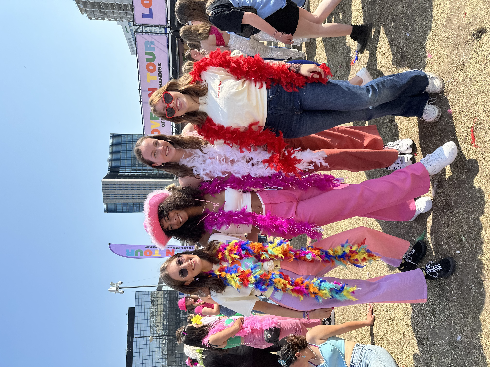

Lotte
My playlist
In mijn vrije tijd heb ik het liefst altijd muziek aan staan! Ik luister naar allerlei genres en vind bijna alle muziek leuk. Ik deel graag mijn muziek, dus hierbij een speciale pagina met een aantal van mijn favoriete playlists. Enjoy!
Mijn passie voor muziek
Ik houd ontzettend veel van muziek en zou er niet zonder kunnen, maar wat zijn nou mijn favorieten? Mijn favoriete genre is new wave. Naast dit genre houd ik veel van (soft)rock, 80's pop en indie(pop). Mijn favoriete band is The Cure! Naast The Cure geniet ik ook erg van The Alan Parsons Project en Electric Light Orchestra. Mijn favoriete soloartiest is Michael Jackson, maar ook van Harry Styles kan ik genieten. Erg breed dus! Naast het luisteren naar al deze muziek geniet ik er ook van om naar concerten te gaan. De concerten waar ik tot nu toe het meest van heb genoten, zijn die van Coldplay, The Cure en L'Impératrice! Hiernaast is ook een foto te zien van mijn vriendinnen en mij bij een concert van Harry Styles, een aantal jaar geleden.
